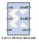

The Xilinx Convolutional Encoder Model block implements an encoder for convolutional codes. Ordinarily used in tandem with a Viterbi decoder, this block performs forward error correction (FEC) in digital communication systems.
Values are encoded using a linear feed forward shift register which computes modulo-two sums over a sliding window of input data, as shown in the figure below. The length of the shift register is specified by the constraint length. The convolution codes specify which bits in the data window contribute to the modulo-two sum. Resetting the block will set the shift register to zero. The encoder rate is the ratio of input to output bit length; thus, for example a rate 1/2 encoder outputs two bits for each input bit. Similarly, a rate 1/ 3 encoder outputs three bits for each input bit.
The block is implemented using a form of parameterizable mux-based collapsing. In this method constants drive logic blocks. Here the constant is the convolution code which is used to determine which register in the linear feed forward shift register is to be used in computing the output. All logic driven by a constant will be optimized away by the down stream logic synthesis tool.
The block currently has three input ports and three output ports. The din port must have type UFix1_0. It accepts the values to be encoded. The
vin port indicates that the values presented on
din are valid. Only valid values are encoded. The
rst port will reset the convolution encoder when high. To add an enable port, you can open the subsystem and change the constant "Enable" to an input port. The output ports
dout1 and
dout2 output the encoded data. The port
dout1 corresponds to the first code in the array,
dout2 to the second, and so on. To add additional output ports, open the subsystem and follow the directions in the model. The output port
vout indicates the validity of output values.